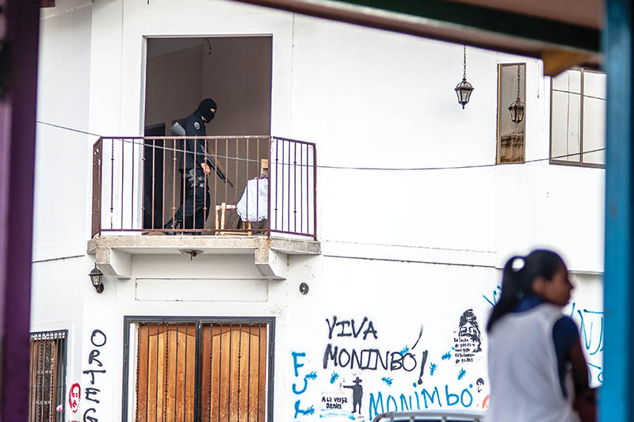
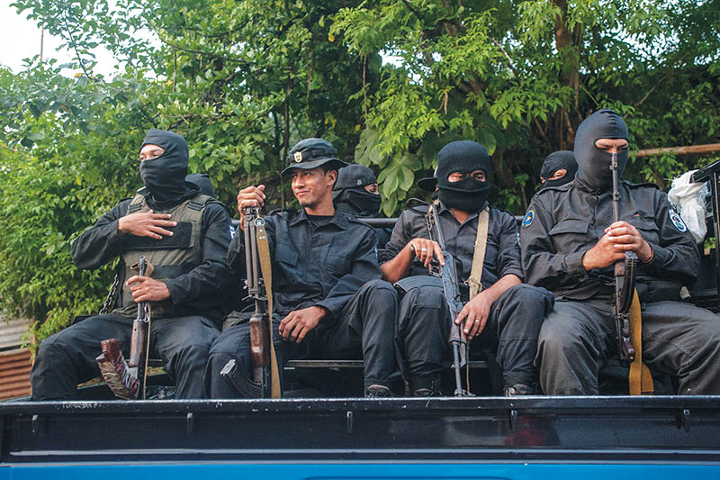
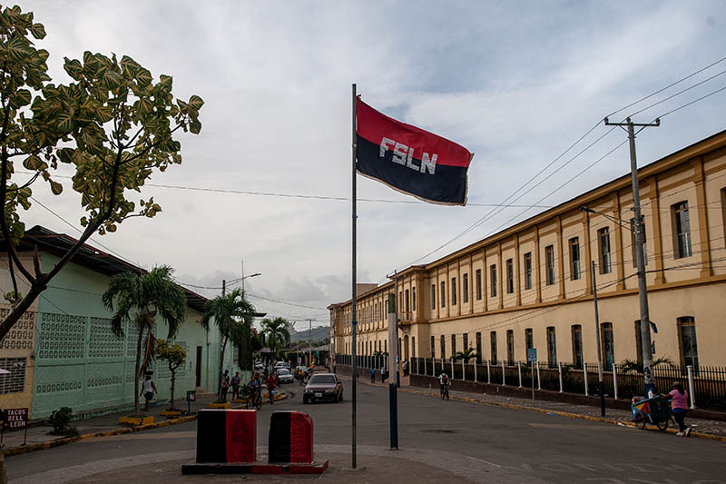
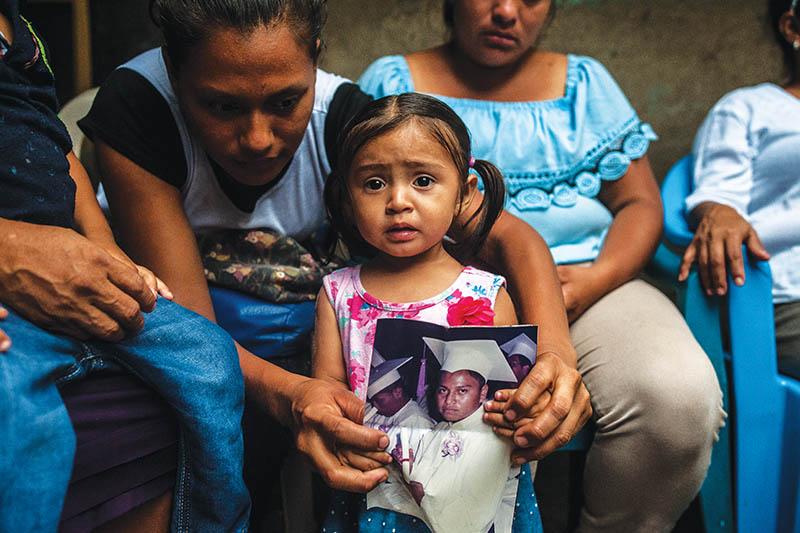

¡Viviràs Monimbó!
The saga of the indigenous neighborhood in Nicaragua that inspired a national revolt

Protesters march in remembrance of the students killed during the uprising. Managua, Nicaragua July 23, 2018.
Photos by Joseph Rushmore
In April, Masaya was Nicaragua’s vibrant cultural destination, before it became the epicenter of a conflict that shook the nation. By May, its tourist attractions were burning to the ground. Gunfire echoed through the alleyways from dawn to dusk. Rebels ousted government forces in June and declared the city’s independence—only to be overwhelmed by a terrifying paramilitary operation in July. Masaya lived under occupation all of August, a town of latched doors and drawn blinds—hiding families who grieved the recently departed and whispered fears of who might be next.
After the most turbulent five months in the city’s history, no one can predict what will come next. But every Nicaraguan knows the impact of what happened in Masaya: The indigenous neighborhood of Monimbó inspired a rebellion that spread across the country.
Since April, protests against Nicaraguan President Daniel Ortega have grown into a national crisis that has engulfed the small Central American country. The announcement of controversial pension reforms sent thousands of Nicaraguans into the streets on April 18. Government authorities tried to suppress the rallies with violence, opening fire on the crowds and leaving dozens dead in the first days of unrest.
Rather than extinguishing dissent, the brutality of government repression transformed national discontent into outrage, fanning the flames of a nation-wide revolt. Ortega quickly withdrew the pension reforms. But the next day, hundreds of thousands marched in the nation’s capital, Managua, now demanding justice for the dead and an end to Ortega’s long rule.
Masaya became a symbol for the tumult in Nicaragua almost immediately. The city was once the cradle of the Sandinista Revolution, which deposed the Somoza dictatorship and brought Ortega and his comrades into power. After Ortega lost the 1990 election, Masaya stayed true to the comandante and his party—the Sandinista National Liberation Front (FSLN)—helping propel him back into office in 2007.
Many revolutionary leaders left the party soon after, claiming it had abandoned the socialist principles of Sandinismo for the ideology of Danielismo: devotion only to the increasingly autocratic president. Ortega’s electoral victory was bolstered by pacts with longtime FSLN enemies in the right wing and Catholic Church. Critics allege that, as a result, Ortega consolidated control over the nation’s courts, legislature, and electoral tribunal. Some opposition parties were barred from participating in elections and the FSLN-dominated national assembly abolished presidential term limits.
Ortega, now in his 22nd cumulative year as head of state, has been accused of building a family dictatorship not unlike the one he helped overthrow decades ago, fighting alongside youthful men in Masaya.
Now elderly, many of those men protested the changes to their pension plans in Masaya’s central park on April 19. When the retirees were attacked by police, the city’s younger generation came to their defense. Witnesses said police opened fire on the unarmed crowd, wounding dozens and killing three young men: Masaya’s first martyrs.
In response, the young protesters took a page from their parents’ rebel playbook and pried up the concrete bricks that paved the city’s streets. Stacking them together, they formed walls that blocked off roads and impeded the movement of police—a tactic that quickly spread across the country. Protesters in Monimbó employed these barricades to hold off police, firing home-made mortars from behind their protection.
On May 8, the ubiquitous red and black colors of the FSLN had been painted over in the blue and white of the Nicaraguan flag. This Sandinista stronghold turning against Ortega was the canary in the coalmine for many observers, a sign of how much ground the government had lost. For protesters, it was an inspiring example, especially the indigenous neighborhood of Monimbó, where dozens of small, self-organized resistance groups began fighting on the frontlines to wrest control of the city from police.
In the center of Monimbó, Father César Gutiérrez waited in the doorway of the San Sebastian church, by a mural commemorating those who had died protesting. “It’s lamentable,” he reflected, “but the situation came to a breaking point … they shed innocent blood.” Residents drifted anxiously in and out of the church; Gutiérrez held their hands in his, listening to their worries patiently. “The church is with the people,” he said solemnly. As the visitors walked away, Gutiérrez mused: “They want to put fear in the population, they’re trying to make it so that people don’t go out into the streets to protest—but this civic, pacifist cry for justice can’t be stopped.”
Protesters, makeshift mortars in hand, patiently watched the roads leading into Monimbó. I asked a young man—who hid his identity behind a bandana—what motivated him. “We’re fighting for the withdrawal of the government,” he explained. “We don’t want any more of this dictatorship.” When asked if this was still a Sandinista city, he replied: “Of course—Masaya has always been Sandinista” then clarified: “Sandinista—not Danielista—the people have stayed firm on being revolutionary.”
The plaza was still bustling with women selling bowls of pork-bone broth and chewy corn tortillas. These remaining slivers of normal city life were rapidly becoming smothered by the escalating violence nationwide.
As the barricades went up, paramilitary groups began to appear. In days, they became as ubiquitous a sight as jingling ice cream cart vendors had been before. Usually dressed in black, these bands of masked men, wielding AK-47s and shotguns, rode around in Toyota Hilux pickup trucks—the government’s preferred brand—attacking demonstrations and storming barricades, often alongside uniformed police.
On May 12, the increasingly militarized pro-government forces set out to end Monimbó’s rebellion for good. Holding out defiantly—under an assault lasting 12 hours and riddling the neighborhood with bullet holes—Monimbó became an icon of resilience, beloved by a burgeoning movement nationwide. But conditions for residents only worsened.
Masaya’s central market was looted. Banks closed down and businesses were sacked. The municipal offices and
artisanal market were burned down.
On June 18, the rebels who had seized and held Masaya against regime forces declared the city’s independence. It was a first for the national rebellion, but militant cities across Nicaragua were again inspired to follow their example.
On June 19, waist-high barricades sheltered nearly every city block inside Masaya. Stores were shuttered. Most business had vanished. The once-bustling central market had been made into a massive garbage dump to collect the sequestered city’s waste. Sidewalks were empty. The sound of gunfire erupted sporadically at all hours.
On safer streets, residents still gathered to joke and gossip. But the specter of violence lurking around each corner cast its long shadow over everything. Neighbors discussed the day’s sniper positions as if it was the weather. Residents who ventured out crouched low and darted across the avenues, bodies close to the barricades and heads ducked down below them. The words “vivirás Monimbó” were painted in an alleyway off the central avenue. (“Monimbó, you will survive!”)
In July, Ortega demanded that Monimbó be “cleansed” in time to celebrate the Sandinista Revolution’s 39th anniversary on July 19. In a fiery response, police commissioner Ramón Avellán, promised: “We will do it—at whatever cost!” At dawn on July 17, church bells rang frantically throughout Masaya, warning citizens and rebels of an assault.
The “cleansing operation,” involved thousands of police and paramilitary who overwhelmed the city’s defenses and flooded the streets of Monimbó. During eight hours of fighting, hundreds fled into the hillsides; paramilitary and police with dogs soon followed. Rebels who survived described to me a desperate chase, one in which innumerable young men and women were slain in the mountains.
Days later, Monimbó’s transformation was surreal. The Sandinista red and black had been painted over the monuments in Monimbó. An FSLN flag flew high in the central plaza. Alleyways were congested by long lines of Hilux trucks packed with masked men and automatic weapons.
Some businesses had returned. An ice cream shop—closed since May—was reopened. The owner was elated. “This was change for the better. [The barricades] brought us only poverty,” she said, asserting that Masaya had been liberated. Outside, Donald Telica, a shoemaker 70 years old, bitterly disagreed: “They haven’t liberated anyone.”
At a main avenue vegetable stand, José Gonzales, the vendor, celebrated Masaya’s return to government control. “There were gangs being financed and paid; delinquents took advantage of it,” he recalled with disgust, arranging dark green avocadoes. “There were forces that wanted to topple the government for their own gain, a coup d’état.” FSLN supporters said they lived as shut-ins for months. Now the shoe was on the other foot.
Most residents of Monimbó refused to talk about what had transpired, insisiting it was dangerous to say anything. Two separate street vendors began to cry and retreated back inside their homes when I asked what had happened on the 17th. One middle-aged woman offered her story, but only if anonymity was guaranteed. “We spent those seven hours [during the assault] lying on the floor. You could hear the whistle of the bullets flying by,” she recalled. “It was horrible, how they killed them.” She spoke softly from behind her half-closed doorway. “Now they’re going around taking people from their houses.”
Videos shared on social media July 17 showed paramilitary dragging young men from their homes. Some were later released. Others were imprisoned in Managua. Many were still unaccounted for. A growing number of distraught parents found themselves inside a nightmare.
“They snatched him up right here,” said 55-year-old saddle craftsmen Agustín Hernández of his son, pointing just a few feet from the family’s home in Monimbó. The family searched everywhere. Finally, Hernández checked the last place he wanted to: the morgue. There, he found the mutilated body of his 30-year-old son, Edgardo—he’d been tortured, then shot in the head and chest.
Neighbors gathered in a packed-dirt space behind the Hernández home. Some brought coffee and pico sweet bread for the mourners. Edgardo’s daughter sat patiently in her mother’s lap. She smiled, open-mouthed with recognition, at a photo of her father passed around the group, reaching out to play with it, bending the portrait between her tiny hands. As her mother softly cried, the one-year-old studied her mother’s face with wide-eyed curiosity that slowly became anxious
confusion.
The girl’s grandfather leaned against a wall around the corner from the wake. “The paramilitary is worse than [Somoza’s] national guard was,” the anguished father raged. “Daniel Ortega says we’re at peace—lies!—they massacred my son, who wasn’t even protesting … they’ll just take anyone they come across.” It seemed impossible for Hernández to grasp how—or why—Edgardo lay dead inside the house. He told me his son had just graduated from the national police academy. “I was a Sandinista,” the bewildered father decalred. “But after what they did to my son,” his voice faltered, “I’m not one anymore.”


.jpg)
.jpg)